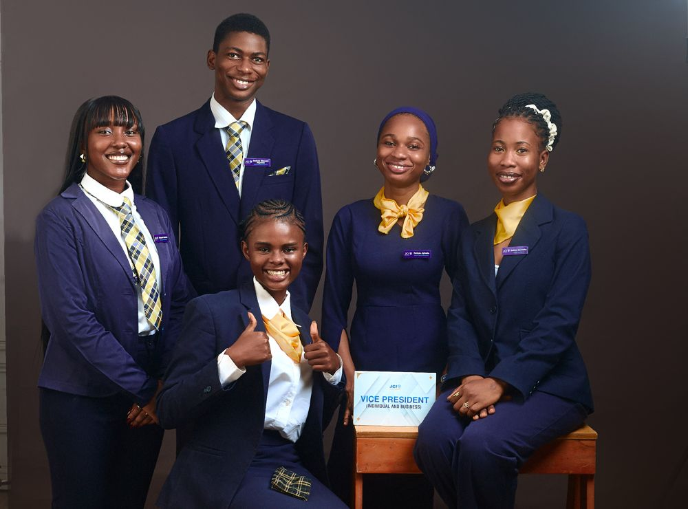
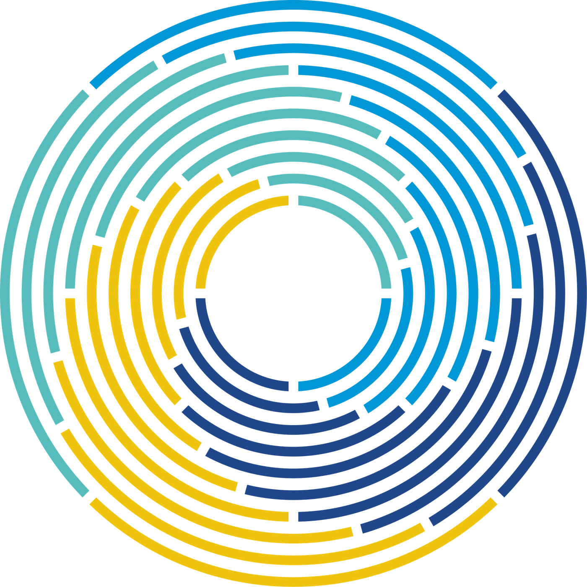

Photo: last convention
Coming up
39th Convention & 40th Investiture Ceremony
Four decades of JCIN UNILAG, celebrated together. Theme, venue and registration TBC
Get the details →We're the University of Lagos chapter of JCI, a global network of young people learning to lead by running real projects for our campus and our city.
Four decades of JCIN UNILAG, celebrated together. Theme, venue and registration TBC
Get the details →Any UNILAG student can apply. Join a directorate, get involved in real projects, and get inducted. Dates:
How to join →Last tenure our members ran projects across campus and Lagos, and worked with partners and other chapters.

JCI brings together young people aged 18 to 40 who want to create positive change. JCIN UNILAG is the University of Lagos local organisation of JCI Nigeria, and has been developing student leaders for close to 40 years.
Every JCI chapter works through the same four areas. Here's what they look like at UNILAG.
Trainings, mentorship and leading real teams, so members leave with skills they can name.
Career clinics, internships and pitching to sponsors, linking campus leadership to the working world.
Projects with student clubs, faculties and communities around Lagos that leave lasting change.
Conventions, inter-chapter competitions and a network that reaches across Nigeria and beyond.

This year we mark four decades of JCIN UNILAG with the Convention and Investiture, a story of our history, and a call to alumni to reconnect.
Our storyJoining JCIN UNILAG takes one application. From there, you're on a team doing real work.
Partners get a committed student team, real reach on one of Nigeria's largest campuses, and clear reporting on what their support delivered.